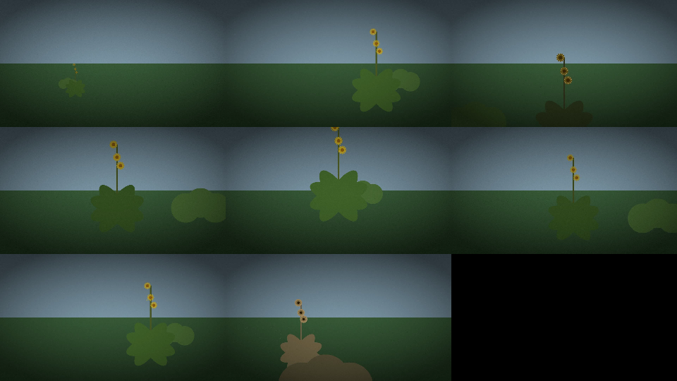

Drone Cinematographer
A small drone that plans and flies documentary shots of plants without harming them
A drone cinematographer for documentary work: it gets the shots a filmmaker cannot physically get, and asks whether an autonomous flier can compose cinema that respects its subject. The subjects follow the season; mullein and comfrey were the first worked example.

A crew of five
A script, director, cinematographer, lighting and editor plan and previsualize a documentary end to end. The creative side can only ask for a shot by name, subject and length; turning that into flight geometry is fixed, checked code below it, so nothing creative can command a motion directly. The director arranges the film in one of two arcs: a documentary arc (establish the place, introduce and study each subject, contrast them, resolve), or a study arc that moves from the plant to each of its parts in detail, its neighbours and its visitors. Lighting puts the drone on the sun side of the subject, so the light rakes rather than flares. The editor picks the best stretch of each take by how well it is composed.
Previsualization
Describe a film in film.toml (title, sun, plants with their parts and stand-offs, visitors such as bees, and optional hand-written beats) and the system renders a watchable synthetic cut, a contact sheet and a full record of every creative and safety decision in order. The renderer is deterministic, so the same film description gives the same frames every time, and the contact sheet works as a diff between runs. A browser panel edits the description, takes a location photo as a backdrop, and adds a plant from tape-measure numbers.
Rules it will not break
- Visual line of sight at all times.
- No motion below the battery level needed to return.
- Emergency landing reachable in under 100 ms.
- A dropped frame over a corrupted take.
- No propwash on the subject: 1.5 m horizontal and 1.0 m vertical from any plant, checked along the whole path of a move, not just its ends, so a move cannot fly through a plant that both endpoints clear.
That stand-off shapes the craft. At its closest legal distance a comfrey fills only about half the frame, so close shots of it are physically impossible, and the cinematographer chooses the tightest size it can reach and says so.
Flying it
A guarded flight console sends each command through the same battery and stand-off checks; a refused move is not attempted, and Ctrl-C lands the drone.
- Year
- 2026
- Medium
- software / film / flight
- Camera
- DJI Tello, 720p, about 13 minutes a flight
- Shots
- establishing, push-in, pull-out, orbit, reveal, rise, descend, tracking, detail, dolly zoom, hold
- Repository: private